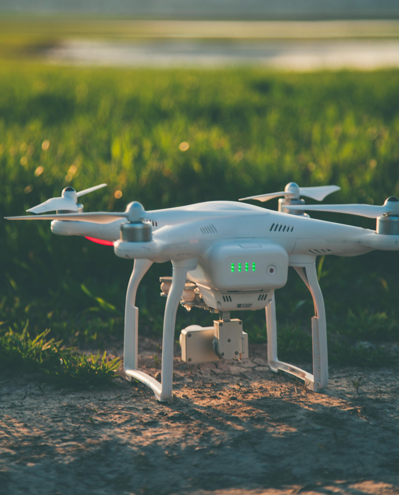
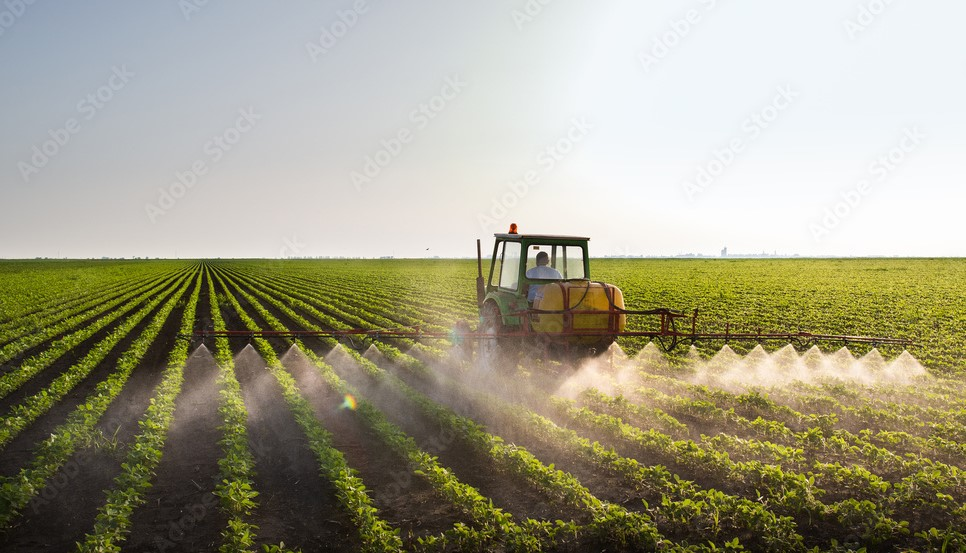
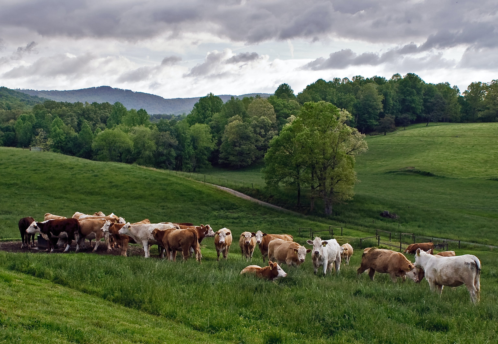

There are four sessions and in each sessions. We shall discuss on
using different technologies that have been proven not only to make agricultural activities easier but also increase the efficiency in agriculture in general and thus leading to maximum yield of agricultural products both in farming sector and in the animal keeping sector or livestock keeping.

SESSION 1.
In this session we shall discuss on how to use drones in our agriculture activities mainly focused on outside farming.
This is mostly suitable on medium and large scale farming as it simplifies the working process.
The drones can be used for several purposes such as:
- Irrigation purposes
- Planning for future events by taking aerial photographs and studying the landscapes.
- Realeasing medicine to crops in need with efficiency.
- Last, it can also be used in the transportation of materials used in the field and in transporting of the harvested crops from the fields to the storage area.
Also in this session we will discuss on how to operate the drone itself.


SESSION 2.
In the second session we shall discuss on green house farming, also called the "The Inside Farming".It is in this section that we will know the answer to the great question," How do I begin Green-house farming."
By starting with a simple definition, A green house is a special structure that is built with the purpose of housing plants of a wide variety,
with the aim of regulating the aspects of weather that affect the growth of plants.
The aspects that are mainly focused on are temperature, humidity and sunshine.
In this session one will get the knowledge to build his/her own complete green house,
maintain it and be able to use it for aim of developing different set of crop(s) with maximum effectiveness and efficiency and without forgetting maximizing profits as well.
Just to mention a few, the advantages of using green house in your crop cultivation is as follows below:
- First and foremost, it is quite effective and efficient in pest control. This is because the housing of the crops helps to prevent contact from outside pests.
- Second, it gives man total control of the weather. When properly built,
the green house can maintain a constant weather such as temperature and humidity which can be set by the farmer him/herself. Even
when the outside weather changes, the inside remains fairly constant.
- Lastly,its quite effective and efficient as it allows a wide variety of crops to be grown all together in one green house.

SESSION 3.
In this third session, will be for anyone who is attracted to large-scale farming.
In this session one will be able to learn the smart ways of performing large scale farming
Large scale farming is quite often associated with different technological equipments as it involves the use of heavy machinery such as tractors and large scale irrigation schemes
when performed on a large piece of land.
Hence, one will gain knowledge on how to use and maintain the heavy machineries such as the tractors while performing the large scale farming.
One will also gain knowledge on how to setup and maintain large scale irrigation systems, that will enable him/her not only irrigate on large pieces of land easily and simultaneously
but also be able to spray medicine, nutrients required and/or pestscides for pest control simultaneously over a large piece of land.

SESSION 4.
In this last session, we shall close the seminar with discussing dairy cattle keeping commonly reffered to as "Livestock-keeping".
We shall put the main focus on cows as we will learn on how to provide and take care of them and meet their needs
so that maximum yield of their products can be obtained over a long period of time.
Our main focus will be on cows as they are a common among farmers.
They provide products like milk,meat, their skin can be used for manufacturing products like belts and shoes when properly processed, and
without forgetting they also produce manure which can be used in crop cultivation thus the focus on cows.
In this session, we shall also be able to visit some wonderful ranches where we will learn more from first hand experienced livestock keepers and
we might be able to even engage in some activities such as milking the cows ourselves.